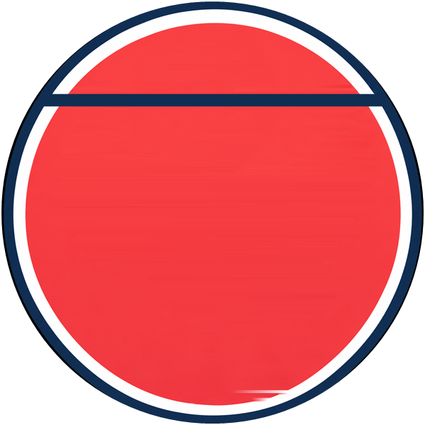
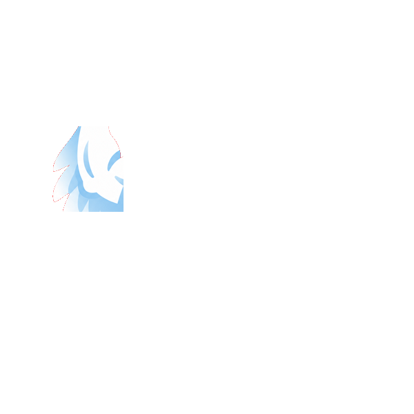
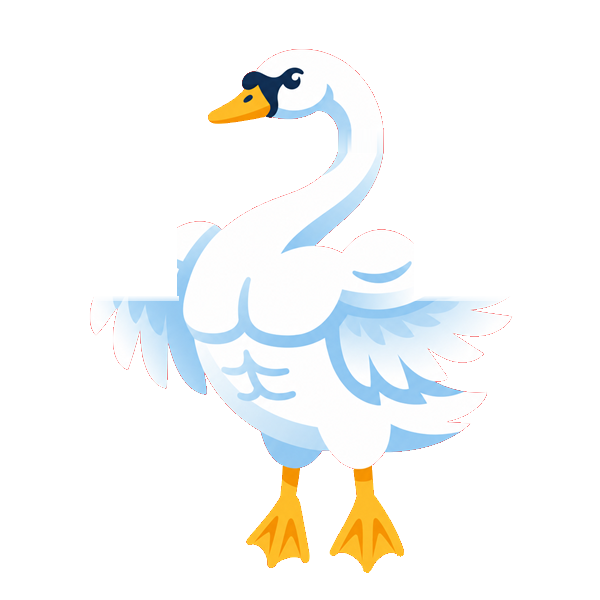
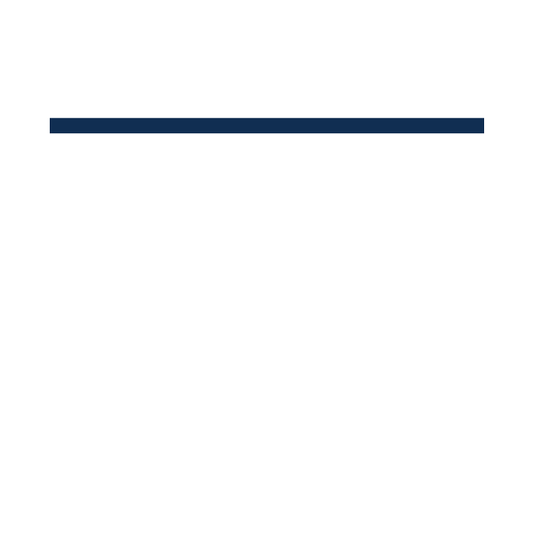
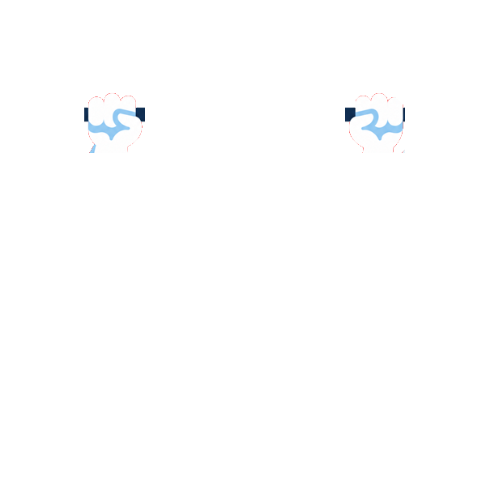

Live





Swan Calisthenics
Die offizielle Website der Swan Calisthenics Community: kostenlose Outdoor-Trainings für alle Niveaus im Street Workout Park in Horgen – mit Mitgliederbereich, Blog und Vereinsseiten.
Über das Projekt
Swan Calisthenics ist eine offene Community, die sich jeden Sonntag von 18 bis 20 Uhr zum gemeinsamen Bodyweight-Training trifft. Die Website stellt die Community vor, zeigt Trainingslevels, Galerie, Standort und FAQ und informiert über den Verein.
Im Team bin ich für die Webentwicklung verantwortlich. Die Seite ist aus einem Schulprojekt (Modul 293) entstanden und wurde seitdem stark ausgebaut und auf Ladezeit optimiert.
Features
- Mitgliederbereich mit Login, Profil und Avatar-Upload
- Trainings-Anmeldung mit Zu- und Absage für den nächsten Sonntag
- Kontaktformular mit Postfach für den Vorstand
- Blog mit Kategorie-Filter und Detailseiten
- Dark Mode mit gespeicherter Auswahl
- Lightbox mit Zoom und Swipe, FAQ-Akkordeon, Community-Slider
Technik
- Vanilla JavaScript ohne Build-Schritt
- Topbar und Modals als Web Components
- Supabase für Login und Daten, mit Row-Level Security
- Responsive Bilder, Sitemap und eigene Domain